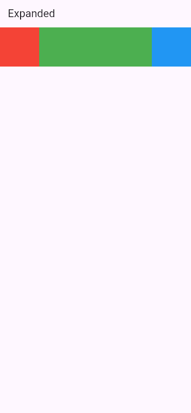
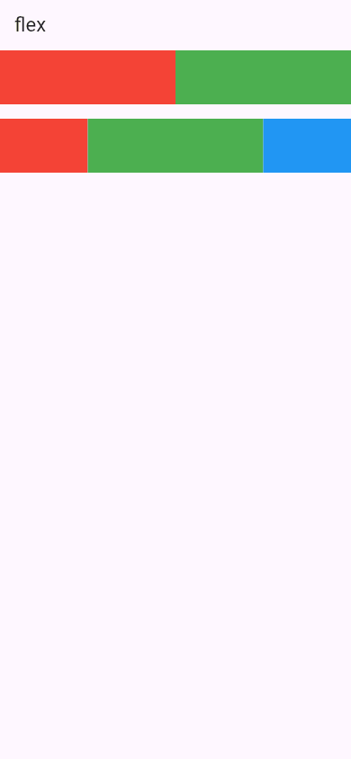
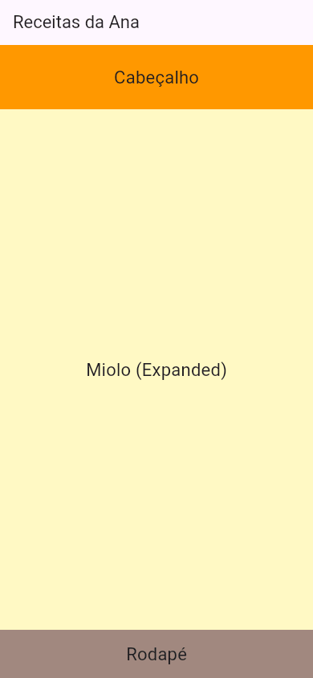
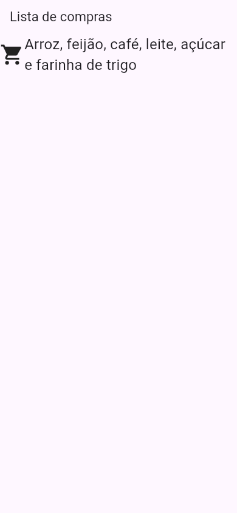
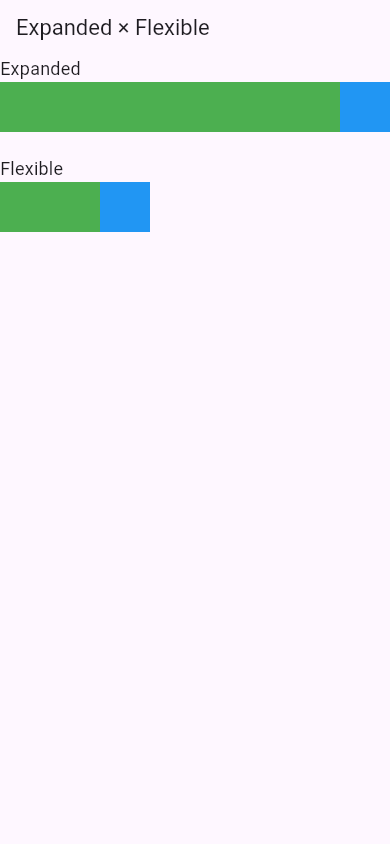
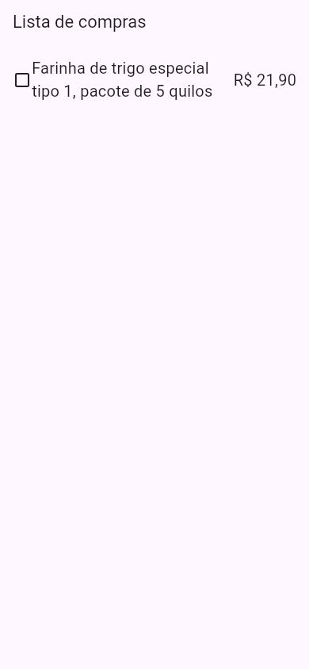

Flutter Expanded e Flexible
Uma Row põe os filhos lado a lado, cada um com o seu tamanho. Mas e se você quiser que um deles ocupe todo o espaço que sobrou? Uma barra de busca que estica até o botão, um texto comprido que deve quebrar a linha em vez de estourar a tela, duas colunas que dividem a tela meio a meio. É para isso que servem o Expanded ("expandido") e o Flexible ("flexível"): eles só funcionam dentro de uma Row ou de uma Column, e repartem o espaço livre entre os filhos.
- Como o
Expandedfaz um filho ocupar todo o espaço que sobra numaRowouColumn. - Como dividir o espaço em proporções com
flex(1 : 2 : 1, meio a meio). - A diferença entre
ExpandedeFlexible: "ocupe tudo" × "pode ocupar até tudo". - Como consertar o overflow de um texto comprido numa
Row. - Os erros reais:
Expandedfora de umaRow/Column, eExpandednum lugar sem limite de altura.
Todos os apps desta aula são um lib/main.dart completo, compilados pelo Flutter Flutter 3.47 do laboratório para a web e fotografados no navegador, em tamanho de celular (390 × 844).
A ideia: a mesa da cozinha
A bancada da cozinha da Ana tem 2 metros. Ela põe o fogão (60 cm) numa ponta e a geladeira (70 cm) na outra. O que sobra no meio (70 cm) é da bancada de trabalho, que "estica" para ocupar o vão, seja ele qual for. Se ela trocar a geladeira por uma menor, a bancada cresce; se trocar por uma maior, a bancada encolhe.
O Expanded é essa bancada: a Row mede primeiro os filhos de tamanho fixo (o fogão e a geladeira), calcula a sobra e entrega a sobra para os filhos Expanded. Se houver dois Expanded, eles dividem a sobra entre si.
1. Um Expanded: ocupe o que sobrou
import 'package:flutter/material.dart';
void main() => runApp(const MeuApp());
class MeuApp extends StatelessWidget {
const MeuApp({super.key});
@override
Widget build(BuildContext context) {
return MaterialApp(
debugShowCheckedModeBanner: false,
home: Scaffold(
appBar: AppBar(title: const Text('Expanded')),
body: Row(
children: [
Container(width: 80, height: 80, color: Colors.red),
Expanded(
child: Container(height: 80, color: Colors.green),
),
Container(width: 80, height: 80, color: Colors.blue),
],
),
),
);
}
}
- Container(width: 80, …) vermelho e azul
- Os filhos de tamanho fixo: o fogão e a geladeira. A
Rowmede esses primeiro. - Expanded(child: …)
- "Este filho fica com o espaço que sobrar." O
Expandednão desenha nada; ele só avisa aRowque o filho dele deve esticar. - Container(height: 80, color: Colors.green)
- Repare: o verde não tem
width. Quem decide a largura dele é oExpanded(a sobra). Se você puser umwidth, ele é ignorado.

Expanded, ocupa toda a largura entre o vermelho e o azul.A conta da Row: a tela tem 390 de largura; o vermelho e o azul pedem 80 cada, juntos 160. Sobram 390 − 160 = 230, e é essa a largura do verde. Num celular de 412 de largura, o verde teria 252, sem você mudar nada.
2. Dividindo em proporções: flex
Com dois ou mais Expanded, a sobra é dividida entre eles. Por padrão, em partes iguais. Para dividir de outro jeito, cada Expanded recebe um flex (o "peso" dele, um número inteiro; o padrão é 1):
body: Column(
children: [
Row(
children: [
Expanded(child: Container(height: 60, color: Colors.red)),
Expanded(child: Container(height: 60, color: Colors.green)),
],
),
const SizedBox(height: 16),
Row(
children: [
Expanded(flex: 1, child: Container(height: 60, color: Colors.red)),
Expanded(flex: 2, child: Container(height: 60, color: Colors.green)),
Expanded(flex: 1, child: Container(height: 60, color: Colors.blue)),
],
),
],
),

Expanded, meio a meio. Embaixo: flex 1, 2 e 1.A conta é sempre a mesma: some os flex (1 + 2 + 1 = 4) e divida a sobra em 4 partes. O vermelho fica com 1 parte, o verde com 2 e o azul com 1. Na tela de 390 de largura, sem nenhum filho fixo, a sobra é 390 inteira: cada parte vale 390 ÷ 4 = 97,5. O vermelho e o azul ficam com 97,5 e o verde com 195. Na linha de cima, com dois Expanded de flex 1, cada um fica com 390 ÷ 2 = 195.
Missão: a Ana quer a coluna dos ingredientes (verde) com o triplo da largura da coluna da foto (laranja). Mude o flex do verde para 3.
import 'package:flutter/material.dart';
void main() => runApp(const MeuApp());
class MeuApp extends StatelessWidget {
const MeuApp({super.key});
@override
Widget build(BuildContext context) {
return MaterialApp(
debugShowCheckedModeBanner: false,
home: Scaffold(
appBar: AppBar(title: const Text('Receitas da Ana')),
body: Row(
children: [
Expanded(flex: 1, child: Container(height: 200, color: Colors.orange)),
Expanded(flex: 1, child: Container(height: 200, color: Colors.green)),
],
),
),
);
}
}
import 'package:flutter/material.dart';
void main() => runApp(const MeuApp());
class MeuApp extends StatelessWidget {
const MeuApp({super.key});
@override
Widget build(BuildContext context) {
return MaterialApp(
debugShowCheckedModeBanner: false,
home: Scaffold(
appBar: AppBar(title: const Text('Receitas da Ana')),
body: Row(
children: [
Expanded(flex: 1, child: Container(height: 200, color: Colors.orange)),
Expanded(flex: 3, child: Container(height: 200, color: Colors.green)),
],
),
),
);
}
}
3. Na Column: o meio estica
Na Column, o Expanded estica na altura. O desenho clássico de uma tela: um cabeçalho fixo em cima, um rodapé fixo embaixo, e o miolo ocupando o resto:
body: Column(
children: [
Container(
height: 80,
color: Colors.orange,
alignment: Alignment.center,
child: const Text('Cabeçalho', style: TextStyle(fontSize: 22)),
),
Expanded(
child: Container(
color: Colors.yellow.shade100,
alignment: Alignment.center,
child: const Text('Miolo (Expanded)', style: TextStyle(fontSize: 22)),
),
),
Container(
height: 60,
color: Colors.brown.shade300,
alignment: Alignment.center,
child: const Text('Rodapé', style: TextStyle(fontSize: 22)),
),
],
),

(O alignment: Alignment.center do Container só centraliza o texto dentro de cada caixa; é assunto da aula Center e Align.) Em outro celular, mais alto ou mais baixo, o cabeçalho e o rodapé continuam com 80 e 60; só o miolo muda.
4. O texto comprido que estourava a tela
Na aula Row e Column, um texto comprido ao lado de um ícone estourou a Row (o overflow com as listras amarelas e pretas). O motivo: a Row pergunta ao Text "qual a sua largura?" sem limite nenhum, e o texto responde "a largura da frase inteira, numa linha só". Com o Expanded, a Row passa a dizer ao texto: "você tem exatamente a sobra". O texto, então, quebra a linha para caber:
body: const Row(
children: [
Icon(Icons.shopping_cart, size: 40),
Expanded(
child: Text(
'Arroz, feijão, café, leite, açúcar e farinha de trigo',
style: TextStyle(fontSize: 24),
),
),
],
),

Expanded, o texto quebra em várias linhas ao lado do ícone, sem overflow.Esse é, de longe, o uso mais comum do Expanded no dia a dia: todo texto que pode ser comprido, dentro de uma Row, vai num Expanded (ou num Flexible, logo abaixo).
5. Flexible: "pode ocupar até tudo"
O Expanded obriga o filho a ocupar a sua parte inteira. O Flexible é mais educado: ele dá ao filho a parte como limite máximo, e o filho pode ficar menor, se quiser. Este app compara os dois com o mesmo filho, um Container de 100 de largura:
body: Column(
crossAxisAlignment: CrossAxisAlignment.start,
children: [
const Text('Expanded', style: TextStyle(fontSize: 18)),
Row(
children: [
Expanded(child: Container(width: 100, height: 50, color: Colors.green)),
Container(width: 50, height: 50, color: Colors.blue),
],
),
const SizedBox(height: 24),
const Text('Flexible', style: TextStyle(fontSize: 18)),
Row(
children: [
Flexible(child: Container(width: 100, height: 50, color: Colors.green)),
Container(width: 50, height: 50, color: Colors.blue),
],
),
],
),

Para um texto, a diferença aparece assim: com Flexible, um texto curto ocupa só o tamanho dele (e o que vem depois fica colado nele); um texto comprido ainda quebra a linha, sem estourar. Com Expanded, o texto sempre ocupa a sobra inteira (e o que vem depois vai para a ponta).
Expanded é um Flexible
Na documentação do Flutter, o Expanded é definido como um Flexible com fit: FlexFit.tight ("ajuste apertado": ocupe exatamente a parte). O Flexible comum usa fit: FlexFit.loose ("ajuste frouxo": no máximo a parte). Os dois aceitam flex.
Formas diferentes de fazer
| Quero… | Use |
|---|---|
| Que o filho ocupe toda a sobra | Expanded(child: …) |
| Que o filho ocupe no máximo a sobra (pode ser menor) | Flexible(child: …) |
| Dividir em proporções (1/3 e 2/3) | Dois Expanded com flex: 1 e flex: 2 |
| Um espaço vazio que empurra os vizinhos para as pontas | Spacer() (um Expanded vazio; aula SizedBox e Spacer) |
| Um tamanho fixo (sempre 100) | SizedBox(width: 100), não Expanded |
| Uma fração da tela (não da sobra) | FractionallySizedBox ou MediaQuery (aula Telas de Vários Tamanhos) |
Quando dá errado
Expanded fora de uma Row ou Column
body: Center(
child: Expanded(
child: Container(color: Colors.green),
),
),
══╡ EXCEPTION CAUGHT BY WIDGETS LIBRARY ╞═══════════════════════════════════════════════════════════ The following assertion was thrown while applying parent data.: Incorrect use of ParentDataWidget. The ParentDataWidget Expanded(flex: 1) wants to apply ParentData of type FlexParentData to a RenderObject, which has been set up to accept ParentData of incompatible type BoxParentData. Usually, this means that the Expanded widget has the wrong ancestor RenderObjectWidget. Typically, Expanded widgets are placed directly inside Flex widgets. The offending Expanded is currently placed inside a Center widget. « (a "cadeia" de widgets e a pilha de chamadas)
- Incorrect use of ParentDataWidget.
- "Uso errado de um
ParentDataWidget." OExpandedé desse tipo: um widget que não desenha nada, só deixa um recado para o pai (o "peso"flex). Só aRow, aColumne oFlexsabem ler esse recado. - Typically, Expanded widgets are placed directly inside Flex widgets.
- "Normalmente, o
Expandedfica direto dentro de umFlex."Flexé o widget "pai" daRowe daColumn. - The offending Expanded is currently placed inside a Center widget.
- "O
Expandedculpado está dentro de umCenter." A mensagem diz exatamente onde está o erro.
A mensagem aparece no console assim que a tela é montada. Como consertar: o Expanded tem de ser filho direto de uma Row ou Column. Para ocupar a tela inteira fora delas, use SizedBox.expand (aula SizedBox e Spacer).
Expanded numa coluna que rola (sem limite de altura)
body: SingleChildScrollView(
child: Column(
children: [
const Text('Ingredientes'),
Expanded(child: Container(color: Colors.green)),
],
),
),
══╡ EXCEPTION CAUGHT BY RENDERING LIBRARY ╞═════════════════════════════════════════════════════════ The following assertion was thrown during performLayout(): RenderFlex children have non-zero flex but incoming height constraints are unbounded. When a column is in a parent that does not provide a finite height constraint, for example if it is in a vertical scrollable, it will try to shrink-wrap its children along the vertical axis. Setting a flex on a child (e.g. using Expanded) indicates that the child is to expand to fill the remaining space in the vertical direction. These two directives are mutually exclusive. If a parent is to shrink-wrap its child, the child cannot simultaneously expand to fit its parent. « (conselhos, os detalhes da Column e a pilha) The relevant error-causing widget was: Column Column:file:///home/ana/app/lib/main.dart:15:18
- RenderFlex children have non-zero flex but incoming height constraints are unbounded.
- "Os filhos da Column têm
flex(umExpanded), mas a altura que ela recebeu é sem limite." - When a column is in a parent that does not provide a finite height … in a vertical scrollable
- "Quando a coluna está num pai que não dá uma altura finita, como algo que rola na vertical, ela tenta ficar do tamanho dos filhos." O
SingleChildScrollViewdeixa a coluna ter a altura que quiser (é por isso que dá para rolar). - These two directives are mutually exclusive.
- "As duas ordens não combinam": a coluna quer ficar do tamanho dos filhos, e o
Expandedquer ficar do tamanho da coluna. Ninguém consegue decidir primeiro. "Ocupe a sobra" não faz sentido quando o espaço é infinito. - Column … main.dart:15:18
- A
Columncom problema, na linha 15 do arquivo.
Como consertar: numa área que rola, não use Expanded: dê ao filho uma altura fixa (SizedBox(height: 200, …)) ou deixe-o com o tamanho natural. Por que a altura é infinita ali é o assunto da aula Como o Flutter Calcula Tamanhos.
flex: 0.5
Expanded(flex: 0.5, child: Container(color: Colors.red)),
$ flutter run
« (…)
lib/main.dart:16:28: Error: The argument type 'double' can't be assigned to the parameter type 'int'.
Expanded(flex: 0.5, child: Container(color: Colors.red)),
^
"O argumento do tipo double não pode ser passado para o parâmetro do tipo int." O flex é um peso inteiro. Para "meia parte", multiplique todos os pesos: em vez de 0.5 e 1, use 1 e 2 (a proporção é a mesma).
Referência rápida
| Escrita | O que faz |
|---|---|
Expanded(child: w) | w ocupa toda a sobra da Row/Column (largura na Row, altura na Column) |
Expanded(flex: 2, child: w) | w fica com 2 partes da sobra (o padrão é 1) |
Flexible(child: w) | w pode ocupar até a sua parte da sobra, mas pode ser menor |
Flexible(fit: FlexFit.tight, child: w) | O mesmo que Expanded |
Spacer() | Um espaço vazio que ocupa a sobra |
Exercícios
1. Numa Row de 400 de largura, um filho fixo de 100 e dois Expanded com flex: 1 e flex: 2. Qual a largura do segundo Expanded?
2. Onde o Expanded pode ser usado?
3. Qual a diferença entre Expanded e Flexible?
4. Complete
Complete para o texto comprido quebrar a linha ao lado do ícone, sem overflow:
Icon(Icons.info),
(: Text('Um texto bem comprido…')),
])
Missão final: a linha do ingrediente
Missão: o nome comprido do ingrediente estoura a linha (aparece a faixa listrada). Embrulhe o Text do meio num Expanded, para ele quebrar a linha e o preço ficar sempre na ponta direita.
import 'package:flutter/material.dart';
void main() => runApp(const MeuApp());
class MeuApp extends StatelessWidget {
const MeuApp({super.key});
@override
Widget build(BuildContext context) {
return MaterialApp(
debugShowCheckedModeBanner: false,
home: Scaffold(
appBar: AppBar(title: const Text('Lista de compras')),
body: const Padding(
padding: EdgeInsets.all(16),
child: Row(
children: [
Icon(Icons.check_box_outline_blank),
Text(
'Farinha de trigo especial tipo 1, pacote de 5 quilos',
style: TextStyle(fontSize: 20),
),
Text('R\$ 21,90', style: TextStyle(fontSize: 20)),
],
),
),
),
);
}
}
import 'package:flutter/material.dart';
void main() => runApp(const MeuApp());
class MeuApp extends StatelessWidget {
const MeuApp({super.key});
@override
Widget build(BuildContext context) {
return MaterialApp(
debugShowCheckedModeBanner: false,
home: Scaffold(
appBar: AppBar(title: const Text('Lista de compras')),
body: const Padding(
padding: EdgeInsets.all(16),
child: Row(
children: [
Icon(Icons.check_box_outline_blank),
Expanded(
child: Text(
'Farinha de trigo especial tipo 1, pacote de 5 quilos',
style: TextStyle(fontSize: 20),
),
),
Text('R\$ 21,90', style: TextStyle(fontSize: 20)),
],
),
),
),
);
}
}

Resumo
Expandedfaz um filho de umaRowouColumnocupar o espaço que sobrou depois dos filhos de tamanho fixo.- Vários
Expandeddividem a sobra; oflex(inteiro, padrão 1) diz o peso de cada um. Flexibledá a parte como limite máximo: o filho pode ficar menor.Expanded=FlexiblecomFlexFit.tight.- Texto comprido dentro de uma
Row: embrulhe numExpandedouFlexiblepara ele quebrar a linha em vez de estourar. - Só use
Expandedcomo filho direto deRow/Column, e nunca numa direção sem limite (dentro de algo que rola).